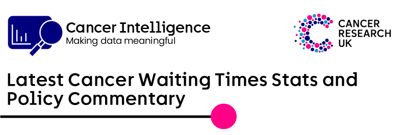
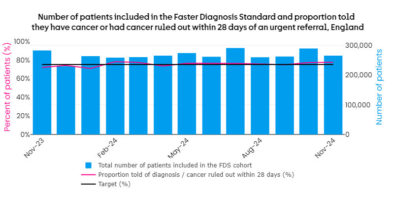
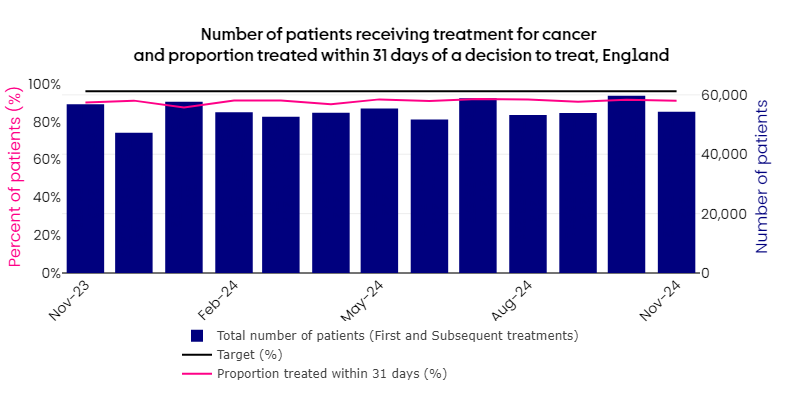
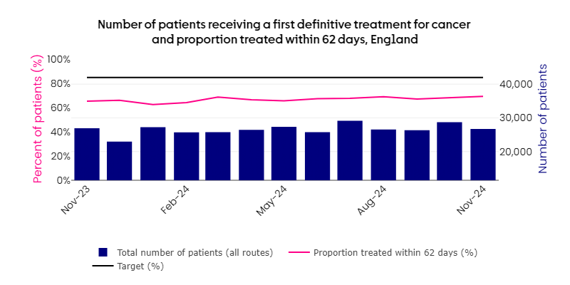

Here are the headlines from today’s data releases covering waiting times for cancer diagnosis and treatment in England in November 2024.
Policy commentary
Cancer waiting times out today continue to show that services are struggling. In November 2024:
- The 31-day target of 96% was not met with only 91% of patients starting cancer treatment within 31 days of a decision to treat.
- The 62-day target of 85% was not met with only 69.4% of patients starting treatment for cancer within 62 days of an urgent referral. This meant that around 8,200 people who started treatment for cancer in November waited longer than 62 days following an urgent referral.
- November 2024 saw around 1,600 (10.5%) patients waiting more than 104 days to begin treatment for cancer following an urgent suspected cancer referral.
- The Faster Diagnosis Standard target of 75% was met with 77.4% of people diagnosed or had cancer ruled out within 28 days of an urgent suspected cancer referral.
Diagnostic tests waiting times
Target: <1% patients waiting ≥6 weeks MISSED at 16.2%
In November, around 1,230,000 people were waiting for key diagnostic tests in England. Of these 16.2% have been waiting six weeks or more. Endoscopy waiting lists had 24% (around 40,700) of people waiting six or more weeks, while radiology waiting lists had 14.9% (around 158,000) waiting six or more weeks.
Note, diagnostic tests waiting times data now include barium studies as a key diagnostic test.
Faster Diagnosis Standard - four week (28-day) wait from urgent referral to communication of diagnosis
Target: 75%, MET at 77.4%
77.4% of people were diagnosed or had cancer ruled out within 28 days of an urgent suspected cancer referral in November 2024, meeting the NHS E target of 75%.

One month (31-day) wait from decision to treat to starting treatment for cancer
Target 96%, MISSED at 91%
Only 91% of patients started treatment within 31 days of a decision to treat in November 2024, missing the NHS E target of 96%. If the target was met, around 2,700 additional patients would have been treated on time in November 2024.
Performance in November 2024 was the 13th worst on record (since October 2009).
The target has not been met since December 2020.

Two month (62-day) wait from urgent referral to starting treatment for cancer
Target 85%, MISSED at 69.4%
Only 69.4% of patients started treatment within 62 days of an urgent cancer referral in November 2024, missing the NHS E target of 85%. If the target was met, around 4,200 additional patients would have been treated on time in November 2024.
The target has not been met since December 2015.
Around 10.5% of patients (around 1,600) waited more than 104 days after an urgent suspected cancer referral to begin treatment for cancer in November 2024.

Cancer Waiting Times & Diagnostic Activity Data Hub
Our dashboard allows you to see visualisations of the data with trend charts and tables for all four UK nations. The dashboard includes:
Breakdowns by (suspected) cancer type or diagnostic tests
Past data (from 2009 to latest available)
Urgent suspected cancer referrals and the proportion who attended their first outpatients appointment within two weeks of an USC referral.
Please let us know if you have any feedback via stats.signoff@cancer.org.uk. Note that the data hub link can now be shared externally.
Stats notes
Sources: https://www.england.nhs.uk/statistics/statistical-work-areas/cancer-waiting-times/, https://www.england.nhs.uk/statistics/statistical-work-areas/diagnostics-waiting-times-and-activity/
Activity and performance figures presented here are as published by NHS England.
Rankings compare historical 31-day and 62-day performance (October 2009 - September 2023) with the new CWT measures (from October 2023), as reported by NHS E.
Further stats requests can be sent to stats.signoff@cancer.org.uk.